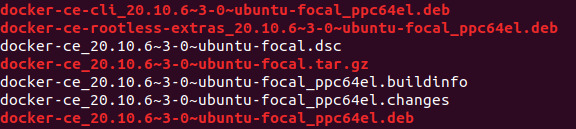
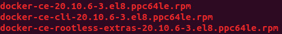

This blogpost aims to teach how to build and create a Docker .deb and .rpm packages starting from Docker 20.10 release, considering that since that version the Docker Engine and Docker CLI are built directly from the source repositories.
Requirements
We used Ubuntu 20.04 for this tutorial for both .deb and .rpm builds.
First, make sure you have both git and the make package on your machine.
You can install then with:
sudo apt install git
sudo apt install make
sudo apt install unzip
After that, we need to install Docker-CE. To do that, just add our POWER packages repository to your machine:
Edit the file /etc/apt/sources.list by adding the following line:
deb https://oplab9.parqtec.unicamp.br/pub/repository/debian/ ./
Download our GPG key, and use the command below to add it to the system:
sudo apt-key add openpower-gpgkey-public.asc
After that, update the package list and install docker-ce:
sudo apt update
sudo apt install docker-ce
More information about our repository in: POWER Repository
Build and Packaging
We’ll need to download docker-cli and moby (current name of the docker engine) and clone the repositories from scan-cli-plugin and docker-ce-packaging.
Clone the following docker repositories:
git clone https://github.com/docker/scan-cli-plugin.git
git clone https://github.com/docker/docker-ce-packaging.git
Download the desired version (we’ll use 20.10.6) of the cli and moby by downloading its releases (you can use git clone to build the master branch too):
# Download the cli source code and change its zip name
wget https://github.com/docker/cli/archive/refs/tags/v20.10.6.zip
mv v20.10.6.zip cli.zip
# Download the moby source code and change its zip name
wget https://github.com/moby/moby/archive/refs/tags/v20.10.6.zip
mv v20.10.6.zip moby.zip
# Unzip the downloaded source-codes
unzip cli.zip
unzip moby.zip
#Change the folders name
mv cli-20.10.6 cli
mv moby-20.10.6 moby
Because the Docker Build uses containerd.io, we need to modify two files on docker-ce-packaging in order to use the community version of the same software, which is probably already installed on your machine if you installed Docker-CE from our repository(POWER Repository).
Besides that
Modify the files with python3 by running the following script:
import re
print("Running Patching Script...")
deb_path = "docker-ce-packaging/deb/common/control"
deb_ver = "containerd (>= 1.2.1)"
rpm_path = "docker-ce-packaging/rpm/SPECS/docker-ce.spec"
rpm_ver = "Requires: containerd >= 1.2.1"
# Update debian containerd dependency
print("Patching DEB...")
deb = open(deb_path, 'r')
data = deb.read()
new = re.sub(r'containerd.io \([^)]*\)', deb_ver, data)
assert data != new, "Nothing was changed in the file."
open(deb_path, 'w').write(new)
# Update rpm containerd dependency
print("Patching RPM...")
rpm = open(rpm_path, 'r')
data = rpm.read()
new = re.sub(r'Requires: containerd.io [^\n]*', rpm_ver, data)
assert data != new, "Nothing was changed in the file."
open(rpm_path, 'w').write(new)
print("DONE Patching")
After the patch is done, we need to create specific folders inside docker-ce-packaging and copy the other cloned repositories into that folders.
From the outside of docker-ce-packaging, do that with:
# Create the folders
mkdir -p docker-ce-packaging/src/github.com/docker/cli
mkdir -p docker-ce-packaging/src/github.com//docker/docker
mkdir -p docker-ce-packaging/src/github.com/docker/scan-cli-plugin
# Copy cli, moby and scan-cli-plugin
sudo cp -r cli/* docker-ce-packaging/src/github.com/docker/cli
sudo cp -r moby/* docker-ce-packaging/src/github.com/docker/docker
sudo cp -r scan-cli-plugin/* docker-ce-packaging/src/github.com/docker/scan-cli-plugin
Making .deb packages
Systems available:
Ubuntu:
ubuntu-buster, ubuntu-bionic, ubuntu-focal, ubuntu-groovy, ubuntu-hirsute, ubuntu-xenial
Debian:
debian-bullseye, debian-buster
Raspbian:
raspbian-bullseye, raspbian-buster
Make the packages with:
cd docker-ce-packaging/deb
sudo VERSION=20.10.6 make ubuntu-focal
They will be available at: docker-ce-packaging/deb/debbuild/
In our example, the .deb files will be at
docker-ce-packaging/deb/debbuild/ubuntu-focal

Making .rpm packages
Edit the file docker-ce-packaging/rpm/gen-rpm-ver
by changing the characters || to && in line 46
Systems available:
CentOS:
centos-7, centos-8
Fedora:
fedora-32, fedora-33, fedora-34
RHEL:
rhel-7
Make the packages with:
cd docker-ce-packaging/rpm
sudo VERSION=20.10.6 make centos-8
They will be available at: docker-ce-packaging/rpm/rpmbuild/
In our example, the .rpm files will be at
docker-ce-packaging/rpm/rpmbuild/centos-8/SRPMS and
docker-ce-packaging/rpm/rpmbuild/centos-8/RPMS/ppc64le

References
Docker CLI: https://github.com/docker/cli
Docker Engine: https://github.com/moby/moby
scan-cli-plugin: https://github.com/docker/scan-cli-plugin
Docker-CE Packaging: https://github.com/docker/docker-ce-packaging
OpenPOWER@UNICAMP POWER Repository: https://openpower.ic.unicamp.br/project/power-repository/